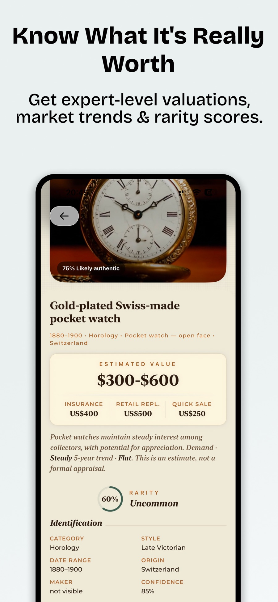

Pocket watches are a collector favourite because they’re so identifiable. The movement is often signed and serial-numbered, the case carries metal marks, and the dial style points to an era. Together these date a watch and its maker precisely.
Open the case back carefully (or have a jeweller do it) — the movement holds most of the story.
Read the movement and serial number
The movement is usually signed with the maker’s name and a serial number that many manufacturers logged to a production year. Note the jewel count, the finishing and any grade name — these separate a modest watch from a fine one.
Identify the case and its metal
Cases are marked for metal: solid gold (with a karat mark), silver, or gold-filled/plated (often stamped with a warranty in years). Solid precious metal raises value considerably over plated, so read the case marks carefully.
Note the winding type and dial
Winding mechanism dates a watch: key-wind examples are generally earlier; stem-wind (crown) came later. Enamel dials with Roman numerals, subsidiary seconds and the style of the hands all help place the era.
Consider condition and completeness
A running movement, an original undamaged dial, matching case and intact enamel all lift value. Cracks, replaced parts and non-original dials lower it. Note whether it’s open-face or hunter (with a cover).
Quick checklist
- Record the movement signature and serial number
- Read the case metal marks
- Identify key-wind vs stem-wind
- Assess dial, hands and running condition
- Note open-face vs hunter case

Do it in seconds with Curio
Curio reads a watch’s clues from a photo:
- Photograph the dial, and the movement and case marks if you can open it
- Curio identifies the likely maker, era and metal
- Get an estimated value range, rarity and care guidance
Frequently asked questions
How do I date an antique pocket watch?
Match the movement’s serial number to the maker’s production records, and cross-check the winding type and dial style. Curio estimates the era from a photo.
Is a gold-filled watch valuable?
Less than solid gold, but quality gold-filled watches from respected makers still hold collector value — identifying the maker is key.
Should I open the case myself?
Only if you’re confident; otherwise a jeweller can open it safely. You can still identify much of the watch from the dial and case exterior.